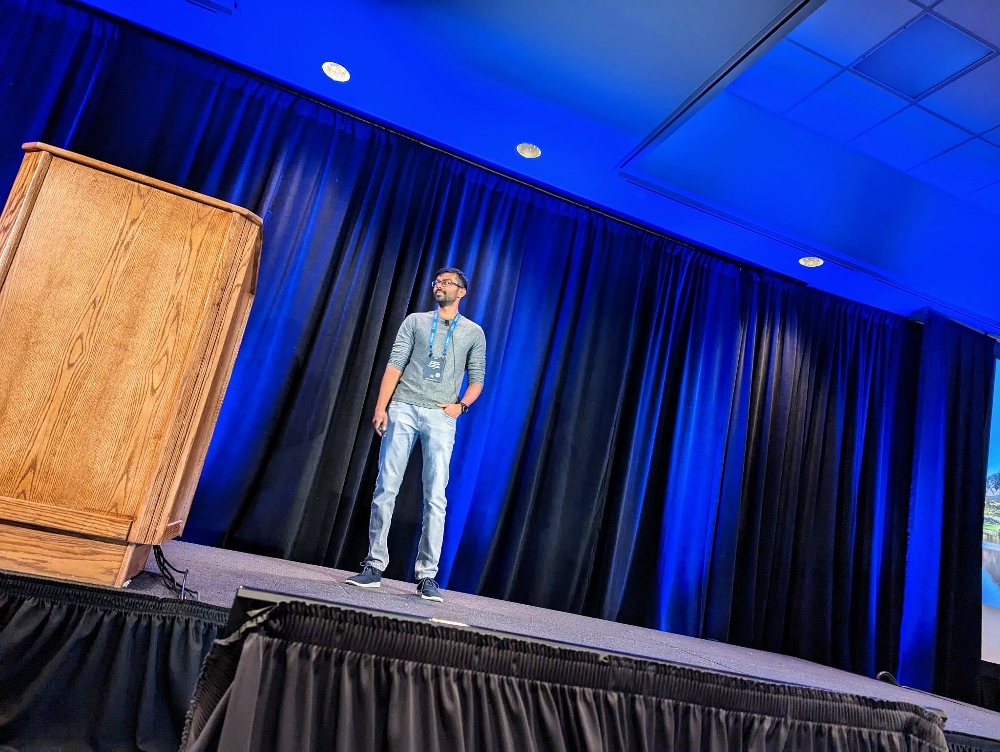

Machine Learning Engineer with 6+ years of experience building and deploying production-grade AI systems across 2D vision, 3D point cloud perception, and LLM-powered search and conversational systems for Architecture, Engineering and Construction (AEC) industries. Proven track record of owning end-to-end ML pipelines in cloud and edge.
I'm a passionate Machine Learning Engineer with 6+ years of experience building and deploying production-grade AI systems that transform complex research into scalable solutions solving real-world problems in AEC industries.
Currently at Trimble, Inc., I specialize in developing cutting-edge AI systems spanning 2D image-based visual perception, 3D point cloud perception, and LLM-powered applications. My work has directly impacted construction and infrastructure industries, reducing manual processing times from hours to minutes and enabling intelligent automation across diverse domains.
I thrive on the challenge of bridging the gap between theoretical machine learning and practical applications, particularly in domains requiring high accuracy, robustness, and scalability. My expertise extends from traditional deep learning to modern foundation models and agentic AI workflows.
Years Experience
US Patents
First-Author Publication
Conference Presentations
Machine Learning Engineer | September 2019 - Present
Building and deploying production-grade AI systems across computer vision, 3D point cloud processing, and LLM applications at Trimble Inc., transforming construction and infrastructure workflows.
Developed and productionized deep learning models for semantic segmentation of 3D point clouds across diverse domains including construction sites, tunnels, indoor spaces, and forest environments. Trained convolutional-based models (ConvPoint, RandLA-Net) and transformer-based models (Point Transformer, SONATA). Released tunnel segmentation model in Trimble Business Center, reducing scan cleaning time from 30 to 3 minutes. First-author publication in Taylor & Francis presented at World Tunnel Congress 2025.
Developed deep learning models in TensorFlow for excavator activity recognition using sequence-based inputs to capture temporal context. Trained object detection and semantic segmentation models (U-Net, DeepLab) using TensorFlow and PyTorch to identify construction site entities with high precision. Performed model training on AWS EC2 (Tesla V100 GPUs), optimized inference pipelines, and benchmarked on Jetson edge devices with TensorRT. Worked with vision transformer models including CLIP, BLIP, DINO v2, and fine-tuned Grounding DINO.
Implemented deep learning algorithm to remove noise from point clouds during 3D scan capture, improving data fidelity for downstream segmentation. Filed and awarded US Patent on acquisition-time noise removal from 3D scanners.
Led the design and deployment of an LLM-powered 3D AI search and conversational system for BIM models (IFC, SketchUp, Revit, CAD) in Trimble Connect. Architected end-to-end data pipeline converting 3D models to structured JSON in MongoDB. Designed multi-stage LLM architecture using LangChain that decomposes user intent, generates optimized queries, and synthesizes grounded responses. Made model-selection tradeoffs combining reasoning-capable LLMs with lightweight LLMs to optimize latency and cost. Implemented prompt caching and conversation memory for multi-turn interactions while preventing hallucinations.
Implemented deep learning models to detect architectural and structural elements across indoor and outdoor construction environments. Supported site monitoring, progress tracking, and inventory mapping use cases. Received the Trimble Innovation Award for this work.
Developed point cloud segmentation model to automate classification and tagging of Industry Foundation Classes (IFC) components. Owned packaging and containerization for multi-platform deployment across Trimble Connect AI extensions, SketchUp Scan Essentials, and Hugging Face demos. Presented results at Trimble Dimensions 2024.
Innovation Leadership, Research Excellence, and Industry Impact
Patent Portfolio in Computer Vision & AI
Co-Inventor
Revolutionary AI system for automated construction site management and orchestration
Lead Inventor
Advanced algorithms for real-time point cloud quality enhancement during 3D scanning acquisition – improves quality and clarity of raw scans
International Conferences & Industry Events
Global Technology Conference
Presented "Deep Learning using NVIDIA Omniverse for Synthetic 3D Point Cloud Generation" to international AI community

Colorado Springs • Top 200 Engineers
Selected from global engineering organization to present deep learning innovations to leadership
Global Infrastructure Conference
First-author publication presentation on AI-powered tunneling quality control
Global User Conference
Showcased latest AI innovations to global user community and industry partners
Publications & Academic Leadership
Taylor & Francis, 2025
First-author peer-reviewed paper on AI-powered tunnel segmentation using deep learning. Presented at World Tunnel Congress 2025.
Aalto University, 2024
Advised a master's thesis on "Using AI Foundation Models and Vector Databases for Understanding Construction Site Digital Twins"
Innovation Awards & Executive Impact
2024
Recognized for groundbreaking work in deep learning-based outdoor 3D point cloud segmentation
2024
Presented latest AI advancements in 3D point cloud perception to the Trimble Board of Directors
I'm always interested in discussing new opportunities, innovative AI projects, and potential collaborations in machine learning and AI.